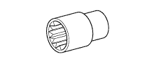
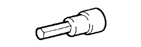
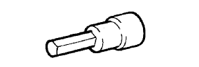
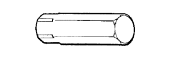
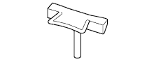

ENGINE UNIT > INSTALLATION > Preparation

| CO/HC meter | - |
| Compression gauge | - |
| Connecting rod aligner | - |
| Cylinder gauge | - |
| Dial indicator with magnetic base | - |
| Engine sling device | - |
| Feeler gauge | - |
| Heater | - |
| Micrometer | - |
| Piston ring compressor | - |
| Piston ring expander | - |
| Plastigage | - |
| Precision straight edge | - |
| Reamer | - |
| Spring tester | - |
| Steel square | - |
| Tachometer | - |
| Timing light | - |
| Torque wrench | - |
| Valve seat cutter | - |
| V-block | - |
| Vernier calipers | - |
| Wooden block | - |
| Press | - |
 | 09011-1C500 | Socket Wrench 12mm | - |
 | 09040-00011 | Hexagon Wrench Set | - |
 | (09043-20080) | Socket Hexagon Wrench 8 | - |
 | (09043-20100) | Socket Hexagon Wrench 10 | - |
 | (09043-30140) | Straight Hexagon Wrench 14 | - |
| 09042-00010 | "TORX" Socket T30 | - | |
| 09043-50100 | Bi-hexagon Wrench 10 mm | - | |
 | 09091-1C100 | Oil Pan Seal Cutter | - |
| Toyota Genuine Seal Packing Black, Three Bond 1207B or the equivalent | - |
| Toyota Genuine Seal Packing 1282B, Three Bond 1282B or the equivalent | - |
| Toyota Genuine Adhesive 1324, Three Bond 1324 or the equivalent | - |